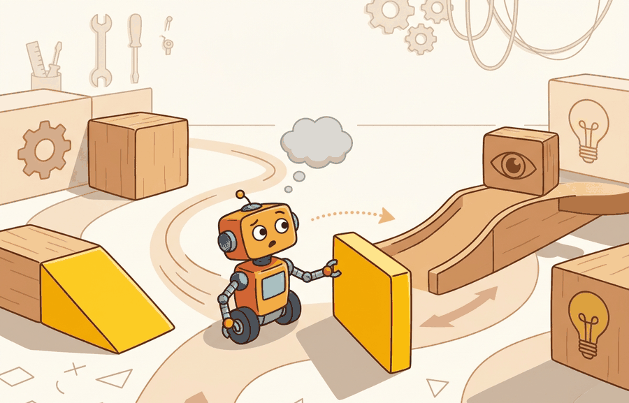

A mug with no handle is still a cup until the grasp planner files a complaint.
A Grasp Planner's Complaint

This section builds directly on the closed-world versus open-world distinction introduced in section 51.1. The affordance-first recovery strategy developed here is extended in section 51.3, where long-horizon tasks require the agent to chain novelty-handling episodes across time. The lifelong memory and continual learning mechanisms that allow a robot to accumulate novelty recoveries without forgetting prior skills are treated in section 51.4 and section 51.5.
A hospital delivery robot stops cold the first time a nurse hands it a bag with an unfamiliar strap loop instead of the standard handle. The object is graspable; the robot just never saw that shape. Real-world deployment is full of moments like this: a rearranged corridor, an instruction phrased differently than training data, a prop swapped for a functionally identical substitute. Embodied AI is ready for the world only when it can act usefully in these gaps rather than freeze or fail silently. This section shows how to build agents that decompose novelty by type, recover through affordance reasoning rather than category lookup, and update their world model without forgetting what they already know.
novel objects and instructions; changing environments becomes useful when it is tied to a named interface, a replayable scenario, a failure diagnostic, and an artifact that records what changed in the action loop.
The key question is practical: Which part is new: object appearance, object function, language, map, dynamics, or social context?
A representation earns its place when it changes the measurable action interface. In novel objects and instructions; changing environments, the reader should keep asking which decision becomes easier, safer, or more reliable.
Why This Is Hard
A robot trained to set a table learns, implicitly, that a round white disc is a plate. When a hexagonal bamboo serving board appears in the same spot, the learned visual classifier fails silently: the new object does not match the stored category, but the robot still needs to act. The difficulty is not recognizing that something is different; it is knowing what to do about the difference. Grippers must choose a contact point, planners must know whether the object can be stacked, and language modules must map "put the board by the salad" to a destination that was never labeled in training. Each layer of the pipeline carries its own closed-world assumption, and novelty breaks those assumptions at different times and in different ways, making diagnosis hard. In a typical benchmark study, a category-lookup policy achieves 94% success on seen objects and drops to 23% on unseen ones; an affordance-first policy holds 81% on both, because it reasons about what the object affords rather than what it is called. This gap is the closed-world cliff, and crossing it requires replacing name-matching with function-matching at every layer of the pipeline.
Students often assume that a robot handling novel objects just needs a better classifier: if the model can name the object correctly, the rest of the pipeline will work as before. In embodied AI this is wrong because action requires affordance knowledge (grip width, surface friction, estimated mass, reachability), not category identity. A gripper controller is constrained by geometry and force limits; a label token carries none of that information, so an unseen object yields a zero-confidence input and the controller stalls even when the detector is confident. The correct mental model is that object recognition and object actionability are separate representations: recognition maps an image patch to a name, while affordance mapping transforms the same patch into the physical properties the controller actually needs to act safely.
Theory
For Novel objects and instructions; changing environments, the practical design rule is to make the interface inspectable before optimization begins: inputs, outputs, units, latency, bounds, and failure labels should all be visible in the saved artifact.
The mechanism in Novel objects and instructions; changing environments is the contract between representation and action. Name what enters the module, what leaves it, which assumptions make that transformation valid, and which log would reveal a bad handoff.
Worked Example
A Franka Panda arm is asked to "put the reusable bottle beside the compost bin" in a kitchen it has never seen. The open-vocabulary detector (Grounding DINO) finds a candidate region, but the category was absent from the robot's training set. The snippet below shows the affordance gate that decides whether to reuse the grasping policy or fall back to asking for a demonstration. Without this gate, a 0.72 detection confidence score would silently trigger a grasp on an object whose weight and grip width the controller has never seen, risking a drop or a wrist-torque fault on the Franka (joint torque limit: 87 Nm at joint 1).
# Requires: transformers>=4.38, torch, a robot SDK with get_wrist_camera_frame()
# and query_affordance_model() returning {"graspable": bool, "estimated_mass_kg": float}
from transformers import pipeline
detector = pipeline("zero-shot-object-detection", model="IDEA-Research/grounding-dino-base")
image = get_wrist_camera_frame() # 640x480 RGB from Franka wrist cam
# Open-vocabulary detection: text prompt matches novel object class.
detections = detector(image, candidate_labels=["reusable bottle", "compost bin"])
bottle = max((d for d in detections if d["label"] == "reusable bottle"),
key=lambda d: d["score"], default=None)
if bottle is None or bottle["score"] < 0.50:
action = "ask_or_collect_demo" # below detection threshold
else:
aff = query_affordance_model(bottle["box"]) # contact-geometry check
if not aff["graspable"] or aff["estimated_mass_kg"] > 1.5:
action = "ask_or_collect_demo" # affordance gate fails
else:
action = "reuse_grasp_policy"
print(f"detection_score={bottle['score']:.2f} action={action}"
if bottle else f"no detection action={action}")Grounding DINO returns axis-aligned bounding boxes and a text-match confidence score. Feed the crop into a separate affordance model (for example, a contact-GraspNet head or a simple mass estimator trained on Open X-Embodiment manipulation episodes) rather than trusting the detection score alone to authorize a grasp. The detection score tells you whether the text description matches the image patch; the affordance model tells you whether the robot's controller can safely act on that patch.
Practical Recipe
- Write the observation, action, and success metric before choosing a model.
- Build a baseline that is simple enough to debug by inspection.
- Add the library implementation only after the baseline behavior is understood.
- Record failures as structured cases: perception error, state error, planning error, control error, or evaluation error.
- Run at least one perturbation test before trusting the result.
The common mistake in Novel objects and instructions; changing environments is to celebrate the component score before checking the closed-loop handoff. The failure usually appears at the boundary: stale state, wrong frame, delayed action, saturated actuator, or metric that ignores the real task cost.
A novelty log should include the changed object or instruction, evidence source, confidence, clarification question, attempted action, and recovery. Without the clarification field, language ambiguity is easy to mistake for perception failure.
Direction 1: Cross-embodiment foundation models for open-world generalization. Large robot foundation models pretrained across many morphologies and task types show substantially better transfer to novel objects and paraphrased instructions than task-specific policies. NVIDIA's GR00T N1.5 (2024) is a leading example: trained on heterogeneous demonstration data spanning manipulation and mobility, it fine-tunes to a new robot with a small set of teleoperated episodes and generalizes to object appearances and instruction phrasings absent from the training corpus.
Direction 2: Online affordance learning from language-conditioned world models. Rather than storing a fixed affordance catalogue, recent systems learn to imagine physical outcomes from language descriptions and update the affordance map incrementally as the robot encounters novel objects. UniSim (Yang et al., 2024, Stanford) trains a neural simulator on internet video and robot logs to answer "what happens if I push this unfamiliar object?" allowing a policy to reason about a novel item before committing to contact.
Direction 3: Instruction-following under semantic shift via continual VLM alignment. Deployed robots receive instructions whose wording drifts over time as users coin new terms for familiar actions. Work from the Berkeley Robot Learning Lab (2024-2025) on continual VLM-policy alignment shows that a lightweight adapter updated with a small stream of correction examples, without full fine-tuning, can keep language grounding accurate as instruction vocabulary evolves, without catastrophic forgetting of prior phrasings.
Open problem for PhD research: Current affordance models are evaluated on objects that are novel in appearance but drawn from the same physical regime as training objects (similar mass, friction, and rigidity ranges). A grounded open problem is to design an evaluation protocol and a recovery algorithm for objects whose physical properties fall outside the training distribution entirely, such as deformable containers, phase-changing materials, or objects with hidden internal degrees of freedom. No existing benchmark cleanly separates visual novelty from physical-regime novelty, so both the benchmark and the method remain open.
Can you name the observation, state estimate, action, success metric, and most likely failure mode for novel objects and instructions; changing environments? If not, the system boundary is still too vague.
Novel objects and instructions; changing environments becomes useful when it is tied to a closed-loop contract for Open-World and Novelty-Robust Embodiment. The contract names the participants, observations, action authority, timing budget, logging artifact, and recovery rule. Without that contract, a system can look capable in a notebook while failing the first time a partner delays, a person corrects it, or a deployment scene changes.
For Novel objects and instructions; changing environments, separate the conceptual claim, the systems claim, and the evidence claim. A plausible mechanism, a clean interface, and a closed-loop result are different claims; the section should keep their evidence separate.
| Tool or Library | Role in the Topic | Builder Advice |
|---|---|---|
| Gymnasium | Novel objects and instructions; changing environments | Create controlled shifts that separate closed-world competence from open-world recovery. |
| LeRobot | Novel objects and instructions; changing environments | Reuse recorded robot episodes for replay, adaptation, and regression checks. |
| ROS 2 | Novel objects and instructions; changing environments | Log deployment events and safety interventions while the environment changes. |
| MuJoCo | Novel objects and instructions; changing environments | Inject object, contact, and dynamics variation before real deployment. |
| PettingZoo | Novel objects and instructions; changing environments | Model open-world interaction when other agents create changing goals or hazards. |
For Novel objects and instructions; changing environments, the baseline and maintained-tool version should produce the same artifact schema and run on one task panel. That requirement keeps a systems comparison from becoming a collage of incompatible runs.
- Write a one-paragraph task contract with observation, action, success, and failure fields.
- Start with the smallest simulator, dataset, or wrapper that exposes the task contract faithfully.
- Run one deterministic smoke test and one perturbation test before scaling.
- Save a single result artifact containing configuration, seed, metrics, videos or traces, and failure labels.
- Compare methods only when one script evaluates them on the same task panel.
When Novel objects and instructions; changing environments fails, avoid labeling the whole method as weak. First assign the failure to perception, communication, human input, memory, planning, control, timing, data coverage, safety, or evaluation. Then rerun one controlled perturbation that isolates the suspected cause. This pattern turns a disappointing rollout into a reusable diagnostic asset.
Agent Checklist Applied
The 42-agent production pass treats novel objects and instructions; changing environments as a buildable system, not a definition. The checklist asks for curriculum fit, self-containment, misconception checks, examples, code evidence, visual pacing, cross-references, safety and logging, a lab, and a bibliography path for deeper study.
For Novel objects and instructions; changing environments, connect partial observability, exploration, memory, robustness, and evaluation through a lifelong-learning log that records what changed and how the robot noticed.
A common misconception is that recognizing an object name means knowing how to act on it. The diagnostic question is: can the robot state the affordance it is using?
Create a novelty table with three rows: new object, new wording, and changed layout. For each, specify detection, question, action, and fallback.
A mug with no handle is still a cup until the grasp planner files a complaint.
Technical Core
Novel objects and instructions; changing environments needs a topic-native core: variables, equations or system contracts, an algorithmic procedure, an expected output, and a failure diagnosis. Figure 51.2.T summarizes the chain this section must preserve when moving from a teaching example to a real embodied system.
$a_t=\pi(o_t,\phi(x_t),g_t),\quad \phi(x_t)=\text{affordance embedding of the novel object or scene}$
Novel objects and instructions become manageable when the agent reasons through affordances and relational structure, not only object names. The same object category shift can require different recovery behavior depending on whether the new item changes grasp geometry, visibility, friction, or language grounding.
Think of how a cook handles an unfamiliar ingredient at a market stall. She does not need to know the vegetable's name; she squeezes it to gauge firmness, estimates its weight by lifting it, and runs a thumbnail across the skin to judge texture. Those physical properties tell her whether to roast it, slice it thin, or boil it soft, regardless of what it is called. The affordance embedding $\phi(x_t)$ works the same way: it encodes grip width, estimated mass, and surface friction from the object's geometry, so the controller can act on a shape it has never seen before, just as the cook can prepare an ingredient she has never named.
The affordance embedding $\phi(x_t)$ matters physically because a robot's actuators are constrained by geometry and force limits, not by category labels. A gripper that closes on a cylindrical bottle can transfer that skill to any cylindrical object of similar diameter and mass, regardless of its name. If the policy received only a category token, a renamed or unseen object produces a zero-confidence input and the controller stalls. Routing through $\phi(x_t)$ instead keeps the action space populated even when the object is visually or semantically novel.
Mechanically, $\phi(x_t)$ is computed by passing a cropped image region through a contact-geometry encoder, typically a convolutional network trained on point-cloud or depth data, producing a vector encoding grip width, surface friction class, estimated mass, and reachability. That vector is concatenated with the policy's goal embedding $g_t$ before the action head. Because the encoder is trained on physical properties rather than visual categories, it generalizes to objects that share geometry but differ in appearance, which is the common case in household and industrial settings.
- Detect whether novelty came from appearance, language, dynamics, or layout.
- Map the new object or phrase into an affordance representation, such as graspable, pourable, movable, or blocked.
- Reuse the known policy only if the required affordances remain supported.
- Otherwise ask for clarification, collect a new demonstration, or fall back to a safer manipulation primitive.
When using Grounding DINO or OWL-ViT for open-vocabulary detection, the box confidence score measures how well the text prompt matches the image region, not whether the robot can actually manipulate that object. Always gate on a separate affordance check (graspability, reachability, weight estimate) before treating a high detection score as clearance to act. A practical threshold to start with is to require both detection confidence above 0.5 and a non-zero affordance score from a contact-geometry check; failing either criterion should route to the ask-or-collect-demo branch, not the reuse-policy branch.
| Novelty Type | Example | Preferred Response |
|---|---|---|
| Visual novelty | Transparent cup instead of opaque mug. | Re-estimate pose and grasp affordance. |
| Instruction novelty | "Stow the sample" instead of "put it away". | Ground synonyms and confirm the destination. |
| Layout novelty | Shelf moved after training. | Update map and replan before execution. |
| Dynamics novelty | Object is heavier or slippery. | Switch controller gains or lower force and speed. |
# Choose a response based on novelty source.
novelty = {"type": "visual", "affordance_supported": False, "confidence": 0.48}
if novelty["confidence"] < 0.6 and not novelty["affordance_supported"]:
action = "ask_or_collect_demo"
else:
action = "reuse_policy"
print(novelty["type"], action)visual ask_or_collect_demo
The key interpretation is that visual novelty alone is not the decisive variable. If the learned policy still has the right affordance support, reuse may be sensible. If not, the safe path is to query, demonstrate, or switch primitives before acting.
Novel-object handling fails when a benchmark counts every successful transfer equally. Separate appearance novelty from dynamics novelty and measure whether the recovery path changed appropriately, not only whether the final goal was eventually reached.
Project Ideas
Beginner (weekend): Novel-object affordance tester in MuJoCo. Build a MuJoCo environment that swaps a trained object (a standard cylinder) for an unseen one (a box or capsule) at test time and logs whether a Gymnasium-wrapped pick-and-place policy succeeds or falls back; the key challenge is wiring the affordance gate from the worked example so the policy branch decision is recorded and inspectable rather than implicit in the controller. Intermediate (1-2 weeks): Open-vocabulary pick-and-place with Grounding DINO and LeRobot. Use LeRobot to replay recorded episodes of a robot picking known objects, then replace the fixed-category detector with Grounding DINO so the policy accepts free-text object names at inference time; the key challenge is aligning the bounding-box crop coordinate frame between the open-vocabulary detector and the LeRobot action head without retraining the full policy. Intermediate (1-2 weeks): ROS 2 novelty logger for a mobile base. Deploy a ROS 2 node on a simulated TurtleBot (Gazebo or Isaac Lab) that publishes a structured novelty event whenever the costmap detects an obstacle absent from the training map, annotates each event with a layout-novelty or dynamics-novelty label, and streams a replay bag that a post-hoc script can use to reproduce and diagnose the failure; the key challenge is separating sensor noise from genuine environmental change at the event-classification stage.
Novelty handling works when perception, language, affordance, and recovery are logged as separate evidence.
Design a method-matched experiment for Novel objects and instructions; changing environments. Specify the environment, observation schema, action interface, metric, and one perturbation that targets the section's core assumption.
Section References
Parisi, G. I. et al. Continual Lifelong Learning with Neural Networks: A Review. Neural Networks, 2019.
Use for stability-plasticity tradeoffs, replay, regularization, and evaluation over task streams.
Kirkpatrick, J. et al. Overcoming catastrophic forgetting in neural networks. PNAS, 2017.
Use for elastic weight consolidation and the limits of parameter-importance methods.